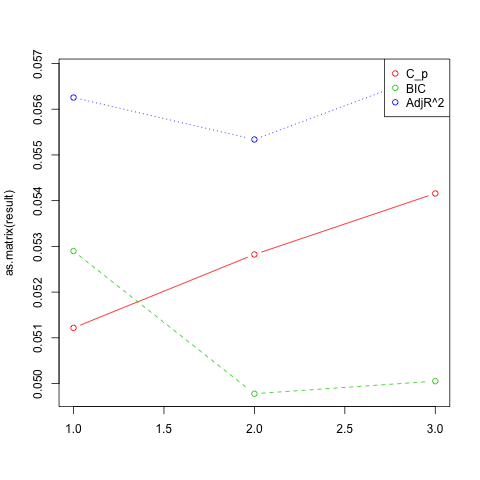
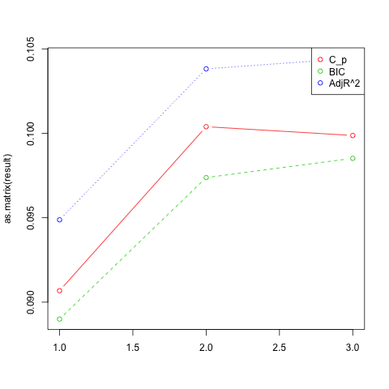
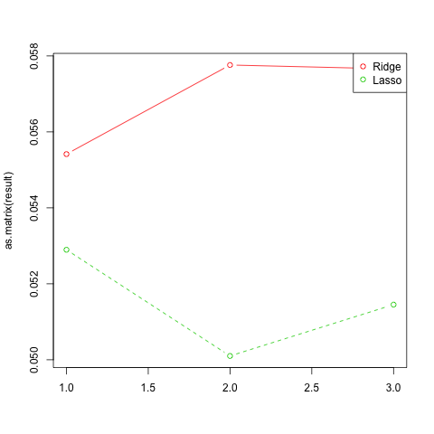

스페인 기업 부도 분석 및 예측
Table of Contents
- Github
- Github page
- Github page - report
1 개요
이 프로젝트는 Bankruptcy2016의 데이터를 이용하여 1998년부터 2003년까지 약 3000개의 기업에 대한 정보를 분석하고 부도 여부를 예측하는 것을 목표로 한다.
2 목적과 목표
기업별 재무재표와 상태 정보등을 이용한 분석을 통해 기업 부도에 영향을 미치는 변수들을 선택하고 모수들을 추정해 적합한 통계적 모델을 찾는 것을 목적으로 한다. 이렇게 이끌어낸 통계적 모델을 이용해서 기업의 재무재표 및 상태 정보를 통해 부도 가능성을 예측하는 것을 목표로 한다.
3 데이터 개요
스페인 소재의 기업을 대상으로 부도 여부를 조사한 1998년 ~ 2003년 까지의 데이터이다.
총 34개의 변수가 있으며 총 8개의 질적변수와 26개의 양적변수가 있다. 2859의 데이터가 있고 이중 NA 값을 제외한 데이터수는 2385개 이다. 데이터 분석시에는 NA 값을 제외한 2385개의 데이터를 이용할 것이다.
원본 데이터셋의 데이터 개요는 bankruptcy-datasets.arff 참조할 것.
3.1 질적 변수
| 변수 이름 | 타입 | 설명 |
|---|---|---|
| SIZE | small, medium, big | |
| SOCIALCODE | Co, Ltd, other | 기업 형태 |
| LINKEDGROUP | no, yes | 그룹 여부 |
| PROVINCECODE | 1..52(4,5,19,34,42,44,51 제외) | 지방 코드 |
| DELAYACCOUNTS | no, yes | DELAY (IN SENDING ITS ANNUAL ACCOUNTS) |
| AUDITED | no, yes | 감사 여부 |
| AUDITORSOPINION | nothing, positive, minor, negative | 감사원 의견 |
| BANKRUPTCY | NO, YES | 부도 여부 |
3.2 양적 변수
| 변수 이름 | 범위 | 설명 |
|---|---|---|
| YEAR | 1998 ~ 2003 | 기록 연도 |
| NUMBEREMPLOYEES | 0 ~ 2662 | 직원 수 |
| AGE | 0 ~ 85 | 기업 연수 |
| NUMBERPARTNERS | 0 ~ 75 | 협력 기업 수 |
| CHANGESLOCATION | 0 ~ 8 | 기업 위치 변경 수 |
| DEBTSTRUCTURE | -99.07 ~ 134.48 | 부채 구조 |
| DEBTCOST | -0.87 ~ 8151.25 | 부채 비용 |
| DEBTPAYINGAVAILABILITY | -7.27 ~ 345.05 | 부채 지불 능력 |
| DEBTRATIO | -43094.47 ~ 17570.04 | 부채 비율 |
| WORKINGCAPITAL | -14.92 ~ 24.23 | 순운전(운영)자본 |
| WARRANTY | -526.22 ~ 46836.93 | WARRANTY |
| OPERATINGINCOMEMARGIN | -45180.9 ~ 8791.51 | 영업이익률 |
| RETURNOPERATINGASSETS | -68775792 ~ 2885.159 | 운용자산순환률 |
| RETURNEQUITY | -1825426 ~ 9349.018 | 자기자본이익률 |
| RETURNASSETS | -481.07 ~ 711.22 | 총자산순이익률 |
| STOCKTURNOVER | -481.08 ~ 711.22 | 자본금회전율 |
| ASSETTURNOVER | -0.33 ~ 112.28 | 자산회전율 |
| RECEIVABLETURNOVER | -905.96 ~ 17096.96 | 매출채권 회전율 |
| ASSETROTATION | -60947.59 ~ 90619.69 | 자본순환율 |
| FINANCIALSOLVENCY | -343.43 ~ 5481.22 | 재무건전성 |
| ACIDTEST | -315.79 ~ 5268.60 | 당좌 비율 |
| NUMBERJUDICIALINCIDENCESTOTAL | 0 ~ 5 | 법적 분쟁 발생 수 |
| NUMBERJUDICIALINCIDENCESYEAR | 0 ~ 1 | 최근 1년간 법적 분쟁 발생 수 |
| SPENTJUDICIALINCIDENCESTOTAL | 0 ~ 448342.4 | 법적 분쟁 부담 비용 |
| SPENTJUDICIALINCIDENCESYEAR | 0 ~ 445476.7 | 최근 1년간 법적 부쟁 부담 비용 |
| NUMBERSERIOUSINCIDENCES | 0 ~ 1 | 위험 사고 발생 수 |
4 분석 과정
기업 부도 요인을 분석하는 것이 목적으로 *BANKRUPTCY* 를 반응변수로 사용한다. *BANKRUPTCY* 는 질적변수로 YES(부도), NO(부도아님)를 통해 부도 여부를 나타내는 변수이다. 어떤 변수가 실제로 기업의 부도에 영향을 미치며, 어떤 분류 방법이 기업 부도 여부를 가장 잘 예측하는지를 알아내는 것이 이 프로젝트의 목적이다.
연구 목적을 달성하기 위해서 아래의 순서를 따라 데이터 분석을 진행해 나갈 것이다.
- *데이터 설정*
- *변수 선택* : Best subset, Forward selection, Backward selection, Ridge regression, Lasso 등을 이용해 각각의 가장 좋은 모델을 선택
- *최종 모델 선택* : 5개의 선택된 모델 중 Validation set approach, LOOCV, 10-fold 을 이용해 오류율을 비교하여 오류율이 가장 낮은 모델을 선택
- *분류 방법 비교* : 선택한 모델을 이용해서 Logistic, LDA, QDA, KNN 을 이용해서 어떤 방법이 가장 오류율이 적은지 분석
- *Bootstrap* : 선택한 모델에서 임의의 2개의 X 변수를 선택하여 Bootstrap을 이용해 모수 \(\alpha\) 추정, 표준편차와 비교
4.1 데이터 설정
변수 선택하기에 앞서 원활한 분석을 위해서 NA 값을 지니는 행을 제거하고 분석하는데 상관이 없는 변수들을 제거해야 한다. 먼저 NA값이 있는 행을 모두 제거하였다. 그리고 기업 형태를 나타내는 =SOCIALCODE=와 지방 코드를 나타내는 =PROVINCECODE= 를 사용할 변수에서 제외하였다. 마지막으로 =AGE= 값은 상식적으로 0 이상이여야 하는데 -1인 값들이 있어서 이러한 행들을 제거하였다. 데이터를 수정하기 전의 데이터는 34개의 변수와 2859개의 데이터가 있었는데, 수정한 후 32개의 변수와 2383개의 데이터가 남았고 이 데이터를 이용해 분석을 진행한다.
예외적으로 LDA, QDA 분석을 진행할 때 사용할 반응변수 =BANKRUPTCY= 를 *0(NO)* 또는 *1(YES)* 로 나타내어야 하기 때문에 이 경우에는 YES, NO 값을 1과 0으로 변환시켜주는 =convert.data()= 를 사용한다.
4.2 변수 선택
4.2.1 Best subset

4.2.2 Forward

4.2.3 Backward

4.2.4 결과




최종 비교

| Error rate | Cp | BIC | Adjr2 | Ridge | Lasso |
|---|---|---|---|---|---|
| Validation set approach | 0.05121746 | 0.05289673 | 0.05625525 | 0.05541562 | 0.05289673 |
| LOOCV(K=200) | 0.05282276 | 0.04977804 | 0.05533741 | 0.05776089 | 0.05010032 |
| 10-fold(K=10) | 0.05415730 | 0.05005212 | 0.05681556 | 0.05765654 | 0.05145151 |
| 최소 오류율 | 0.05121746 | 0.04977804 | 0.05533741 | 0.05541562 | 0.05010032 |
| Cp | BIC | Adjr2 | Ridge | Lasso |
|---|---|---|---|---|
| SIZE | SIZE | SIZE | [All] | YEAR |
| NUMBEREMPLOYEES | DEBTCOST | NUMBEREMPLOYEES | SIZE | |
| AGE | RETURNEQUITY | AGE | AGE | |
| LINKEDGROUP | RETURNASSETS | LINKEDGROUP | LINKEDGROUP | |
| DEBTCOST | NUMBERJUDICIALINCIDENCESYEAR | NUMBERPARTNERS | WORKINGCAPITAL | |
| WORKINGCAPITAL | SPENTJUDICIALINCIDENCESTOTAL | DEBTCOST | RETURNEQUITY | |
| RETURNEQUITY | AUDITED | WORKINGCAPITAL | RETURNASSETS | |
| RETURNASSETS | RETURNEQUITY | ASSETTURNOVER | ||
| ASSETTURNOVER | RETURNASSETS | FINANCIALSOLVENCY | ||
| NUMBERJUDICIALINCIDENCESYEAR | ASSETTURNOVER | NUMBERJUDICIALINCIDENCESTOTAL | ||
| SPENTJUDICIALINCIDENCESTOTAL | NUMBERJUDICIALINCIDENCESYEAR | NUMBERJUDICIALINCIDENCESYEAR | ||
| NUMBERSERIOUSINCIDENCES | SPENTJUDICIALINCIDENCESTOTAL | SPENTJUDICIALINCIDENCESTOTAL | ||
| AUDITED | NUMBERSERIOUSINCIDENCES | AUDITED | ||
| AUDITORSOPINION | AUDITED | AUDITORSOPINION | ||
| AUDITORSOPINION | ||||
| 14 | 7 | 15 | 32 | 14 |
4.2.5 Shrinkage Methods(Ridge, Lasso)